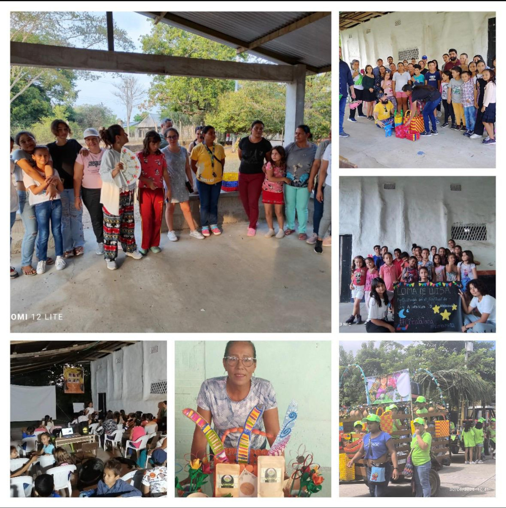

Nuestra Historia
Nuestros Orígenes
Desde hace 5 años surgió la iniciativa "Eco-manualidades de Loma Limpia", liderada por mujeres campesinas de la vereda Loma de Luisa, con el objetivo de reducir las brechas sociales y educativas mediante actividades de refuerzo escolar y la transformación de material reciclado en manualidades útiles para el hogar.
Contexto y Necesidad
El municipio de Guamo, Tolima, presenta indicadores preocupantes de pobreza multidimensional (32.2%), analfabetismo (15.7%) y bajos logros educativos (65.1%), agravados por problemas de violencia estructural. En respuesta a esta problemática nació nuestra fundación.
Nuestro Impacto
Nuestras Actividades
- Elaboración de manualidades útiles a partir de material reciclable, promoviendo la economía circular y reduciendo el impacto ambiental.
- Formación y capacitación para la elaboración de manualidades, artesanías y otras actividades complementarias que fortalecen las habilidades técnicas de la comunidad.
- Jornadas de refuerzo escolar, formación en liderazgo y capacidades juveniles para mejorar el rendimiento académico y el desarrollo personal.
- Desarrollo de actividades encaminadas a fortalecer y agregar valor a los productos del campo, especialmente limón, flores, frutas y semillas.
- Proyectos de investigación y desarrollo basados en los principios de la economía circular para crear productos de aseo a partir de material plástico reciclado.
Refuerzo Escolar
Metodología Educativa
El componente de refuerzo escolar busca fortalecer el aprendizaje de niños y jóvenes, mejorando sus competencias en lectura, escritura, matemáticas y ciencias. A través de metodologías lúdicas y participativas, promovemos el pensamiento crítico, la resolución de problemas y la creatividad.
Enfoque Integral
Integramos el cuidado del medio ambiente y el uso de recursos locales en el proceso educativo. Con el apoyo de docentes, mentores y la comunidad, buscamos reducir brechas educativas y fomentar el liderazgo juvenil para una educación más equitativa e inclusiva.
Nuestro Equipo
Liderazgo Académico
Claudia Vaca, profesora de Farmacia de la Universidad Nacional, lidera junto con profesionales de diversas áreas incluyendo docentes universitarias, artistas plásticas y audiovisuales, farmacéuticas, biólogas, ingenieros agrícolas y profesionales de ciencias sociales.
Compromiso Educativo
Luisa Fernanda González, profesora de un colegio público del distrito capital, complementa el equipo de profesionales comprometidos con reducir las brechas educativas y sociales, construyendo liderazgo en la comunidad rural.
Equipo Multidisciplinario
Contamos con un equipo promotor muy activo de mujeres y jóvenes profesionales de Bogotá que incluye especialistas en diversas áreas, todos unidos por el compromiso de mejorar las condiciones de vida y construir liderazgo en la comunidad rural.
Misión y Visión
🎯 Nuestra Misión
Nuestra misión es producir y comercializar productos ecológicos de alta calidad y ofrecer servicios educativos, contribuyendo al desarrollo socioeconómico de la comunidad, promoviendo la sostenibilidad y el aprendizaje entre niños y adolescentes.
🌟 Nuestra Visión
Ser reconocidos como una fundación modelo que impulsa la sostenibilidad y la educación integral en la comunidad, generando un impacto positivo, solidario y un crecimiento sostenible que transforme vidas y territorios.